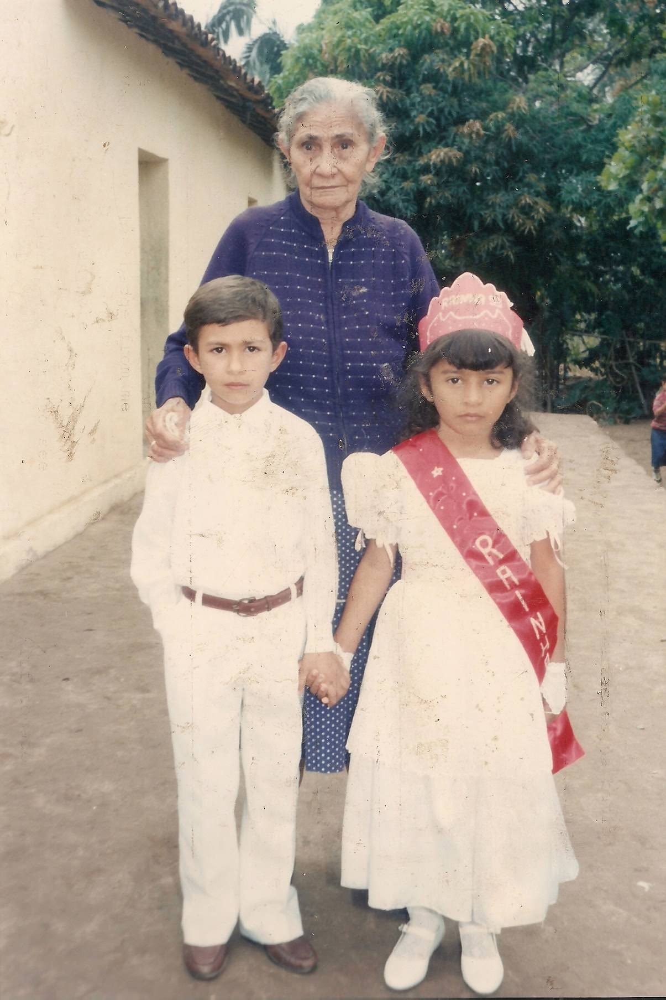
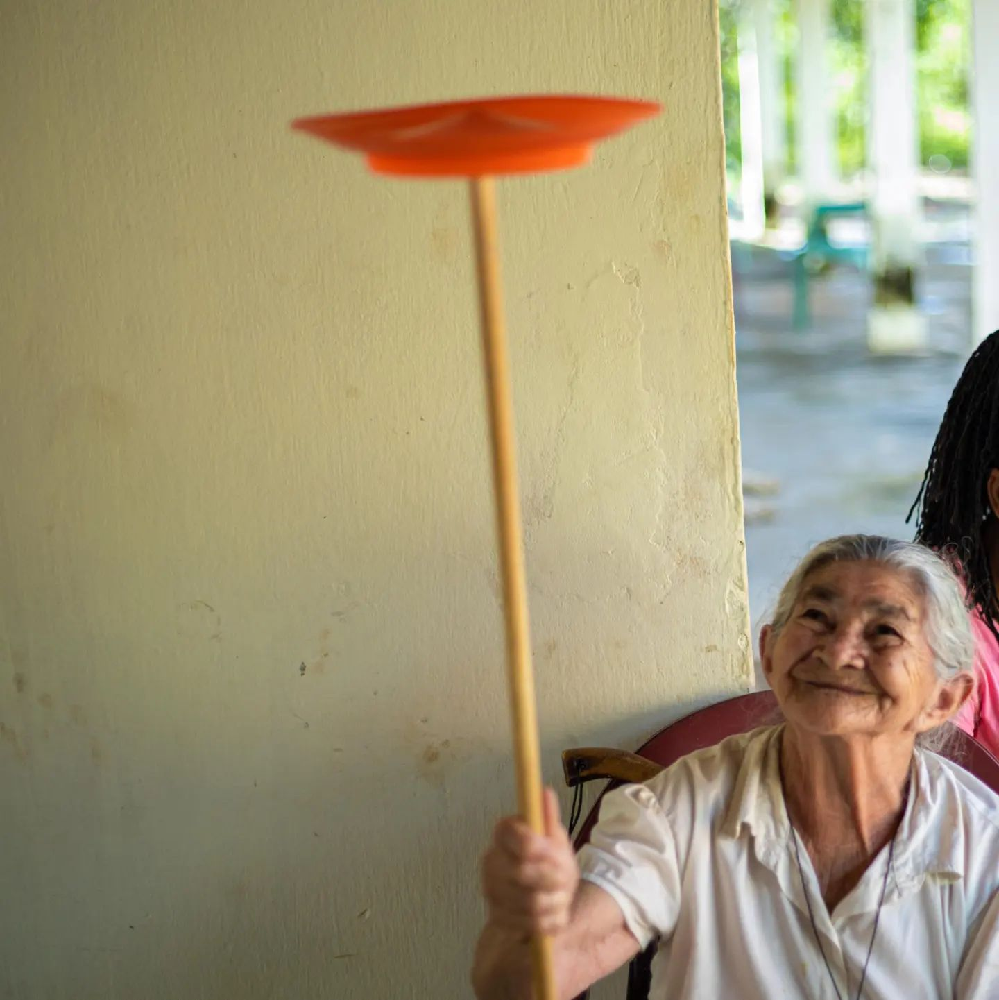
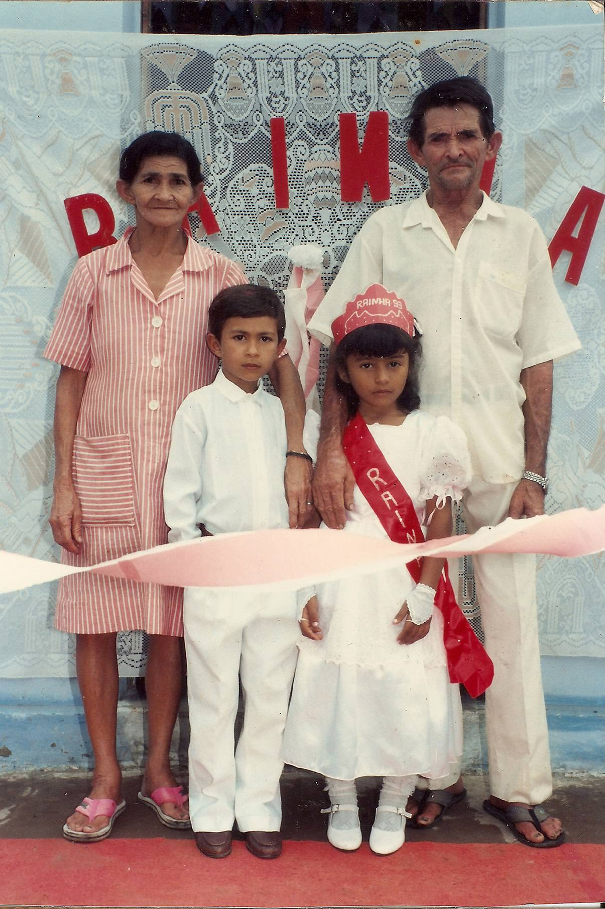

Endogamia Barbalhense
Home
Biografias
Histórias
Fotos
Árvore Genealógica
Documentos
Entrevistas
Contato
Fotos

João Silva com seus filhos em 1950
Maria Fernandes em sua formatura em 1945

Maria Fernandes em sua formatura em 1945

Maria Fernandes em sua formatura em 1945
Maria Fernandes em sua formatura em 1945
×